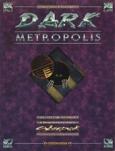

|  | Fiche technique |
| Supplément pour le jeu de rôles Cyberpunk 2020, édité par Ianus Games (Dream Pod 9) (1994) | |
| Langue | Anglais |
| Thème | Alternate Reality : Cyberpunk encore plus glauque |
| Qualité du background | 5 / 5 |
| Qualité des scénarii | 4 / 5 |
| Qualité des règles | 4 / 5 |
| Qualité des illustrations | 4 / 5 |
| Qualité de l'écriture | 5 / 5 |
Ianus Games poursuit sa gamme des Alternate Realities. On y retrouve à nouveau des idées pour gérer la vie familiale, le stress et les troubles mentaux, les dysfonctionnements du matériel, l'espionnage au quotidien, les radios illégales, les fêtes, les catastrophes naturelles, les vagues de chaleur, les manifestations et émeutes, quelques nouveaux archétypes de personnages. On y trouve aussi des inspirations pour créer des lieux de jeu (asiles d'aliénés, bar à drogue, enclaves), et introduire des sujets un peu plus chauds : la drogue, les expériences near-death, le rock émotionnel, l'industrie du sexe, l'esclavage, le plaisir virtuel. On aura aussi de quoi faire des animaux synthétiques. S'en suit un scénario simple mais de bonne qualité "The imp of the perverse", sur le sujet de la manipulation mentale. Ce supplément est de très bonne qualité, un must.
{kind=link}